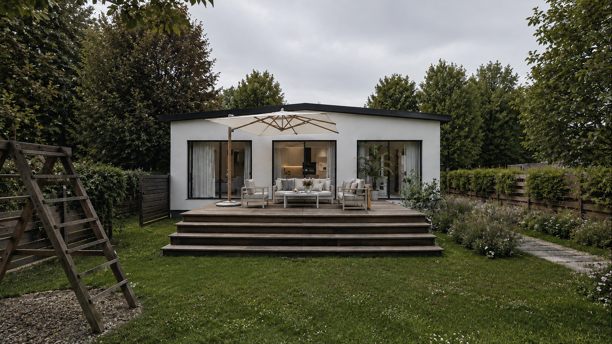

Villa Red Sun
Climate Interface
55.516°N 12.208°E
Solar Position
Solar Noon
55.3°
Derived
8.8°C
Mean Air Temperature
Real — station
65mm
Precipitation, this month
Moderate
Real — station
ISOLATED R&D — Phase 3.5. Background: real exterior render from the authoritative asset library, shown with a display-time desaturation/lightening treatment only (source file untouched). All figures sourced from the Complete Climate Site Analysis reports; see provenance micro-labels beside each value.